Inland Empire Ghost Hunters
Local Ghost Investigations Live Multi-Camera Monitoring
Respectful, evidence-focused case review for homes, businesses, and historic locations across the Inland Empire.
Confidential Intake
Documentation First
Permission-Based Sharing
Professional Local Investigations
A serious first impression for people dealing with sensitive activity.
The site is built around trust: clear case intake, private evidence handling, live multi-camera observation, and a calm process that avoids haunted-attraction language or exaggerated claims.
Primary Capability
Live Multi-Camera Video Monitoring
Fixed camera coverage allows selected areas to be viewed live during an investigation while also recording footage for later review.
This helps the team observe multiple rooms or areas at the same time and compare reported activity with what was captured on video.
See the investigation process
Multiple areas observed at once
Recorded footage for review
Reported activity compared with video
Private evidence handling
Fixed camera coverage
Multiple areas observed at the same time, then reviewed against reported activity.
Mission Control
A private command center for evidence review.
Investigation notes, camera status, environmental readings, and evidence moments are organized in one review workflow before anything is shared publicly.
08 Camera Views
REC Private Review
EVP Audio Review
Case Intake
Review Active
22:14:36
Camera 01 / Primary
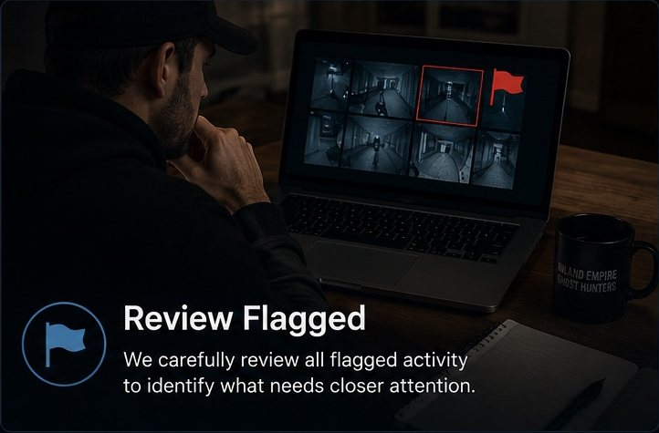
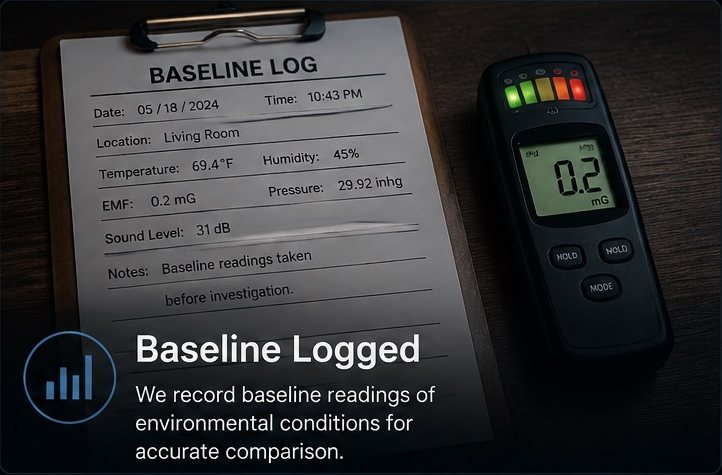
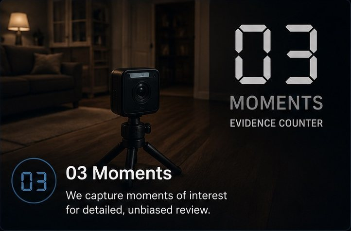
Why Homeowners Contact Us
A calm next step when activity keeps happening.
What Happens Next
A clear process before any investigation is scheduled.
Every request is reviewed first so the case can be handled safely, respectfully, and with the right level of documentation.
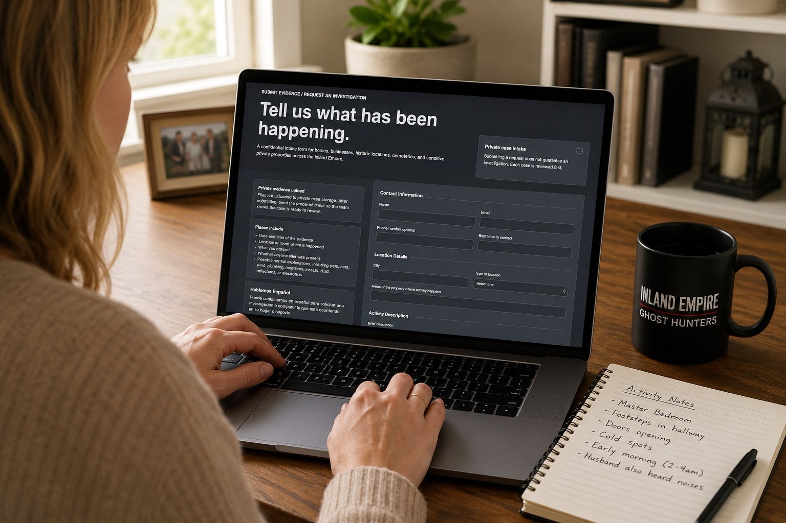
01 Submit a request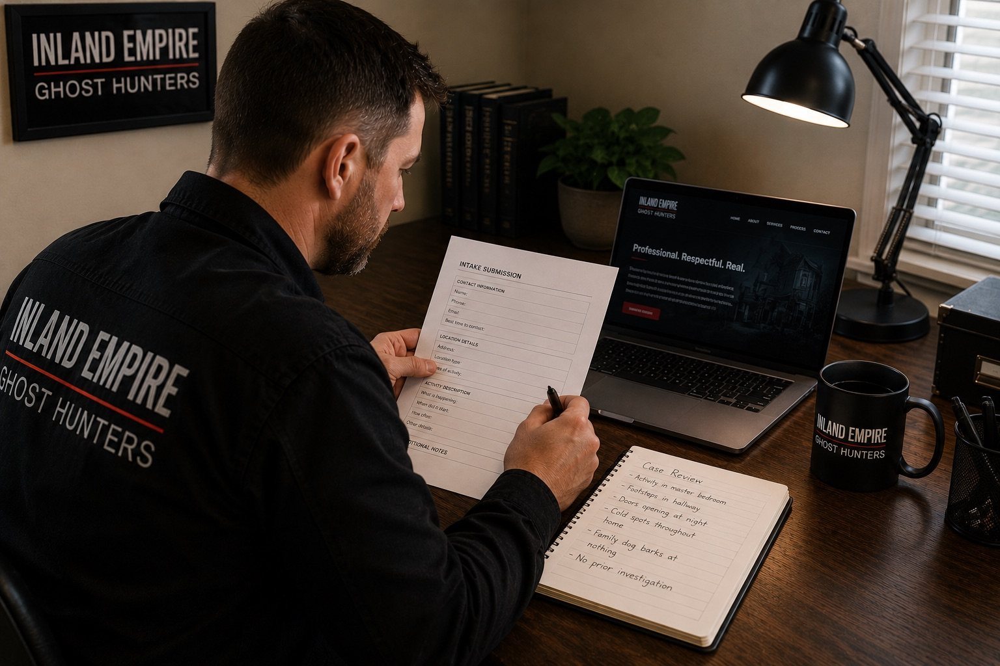
02 Details are reviewed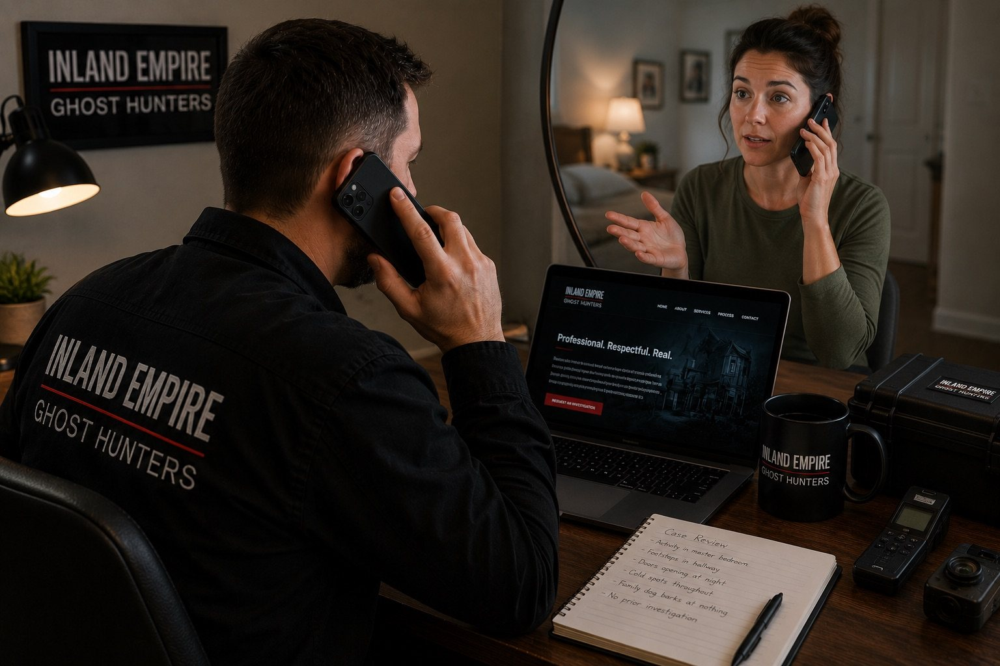
03 Call or walkthrough if needed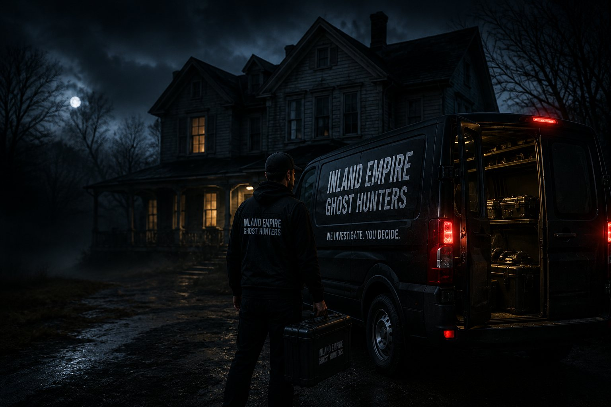
04 Investigation may be scheduled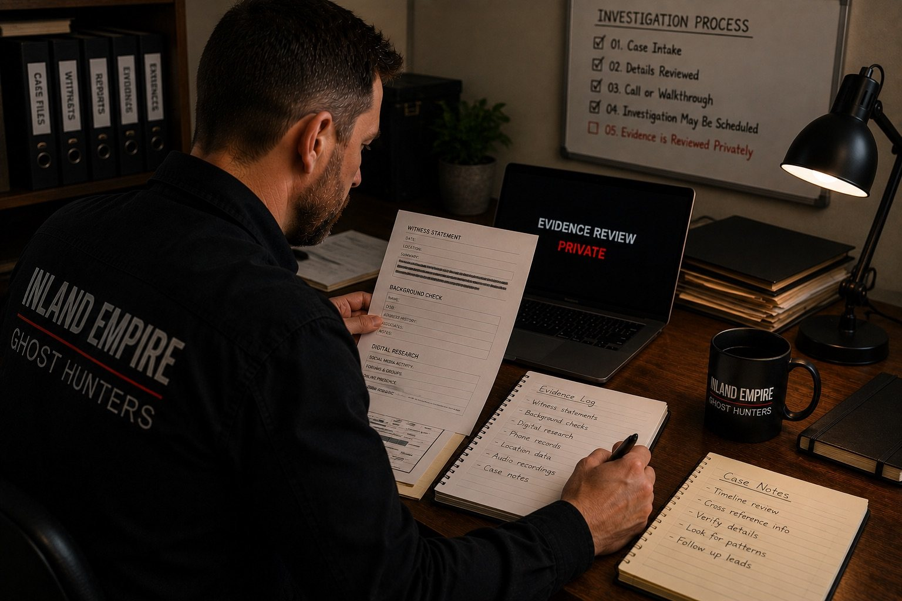
05 Evidence is reviewed privately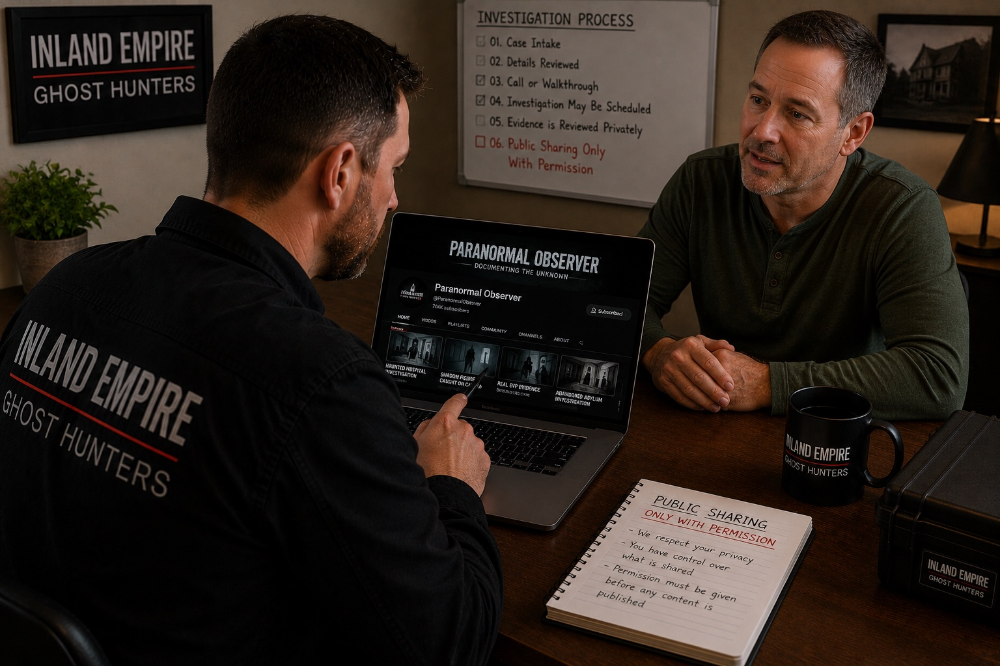
06 Public sharing only with permissionOur Approach
Patience, discretion, and documentation.
Every case is approached with patience, discretion, and documentation. We do not assume every sound, shadow, or movement is paranormal. Reported activity is compared with video, audio, environmental notes, and ordinary explanations first.
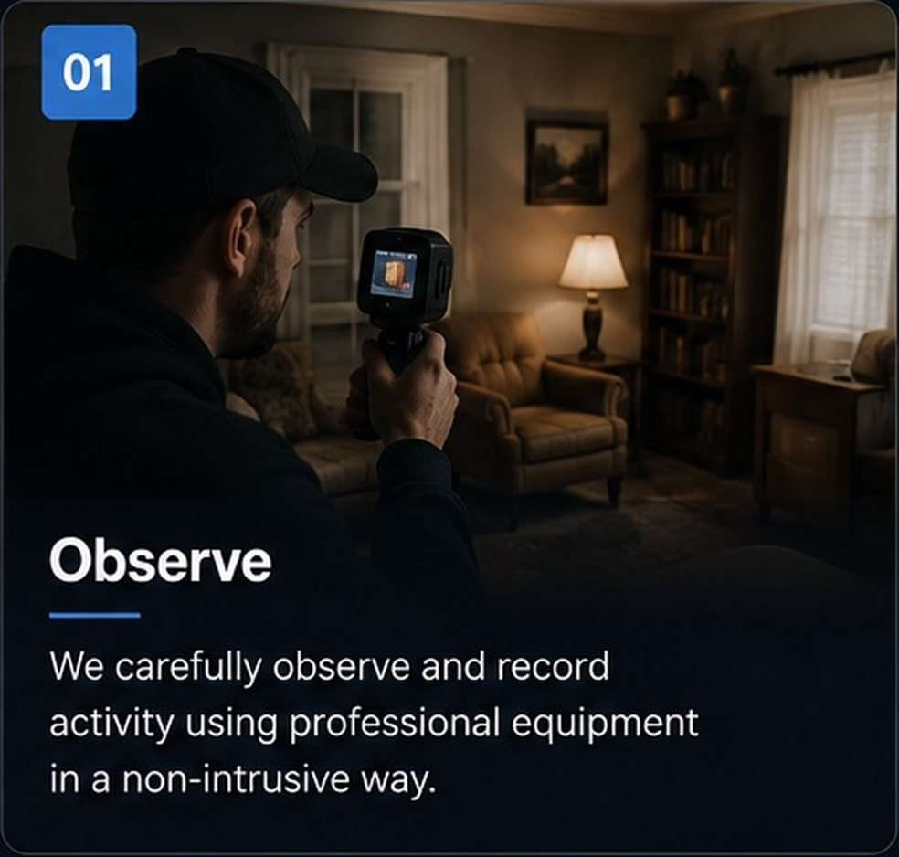
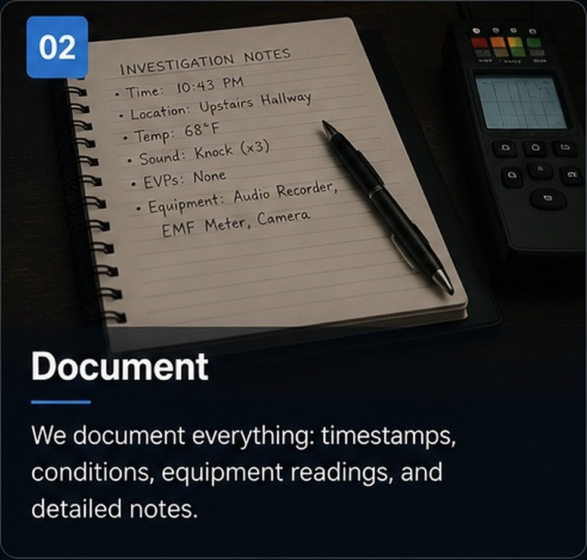
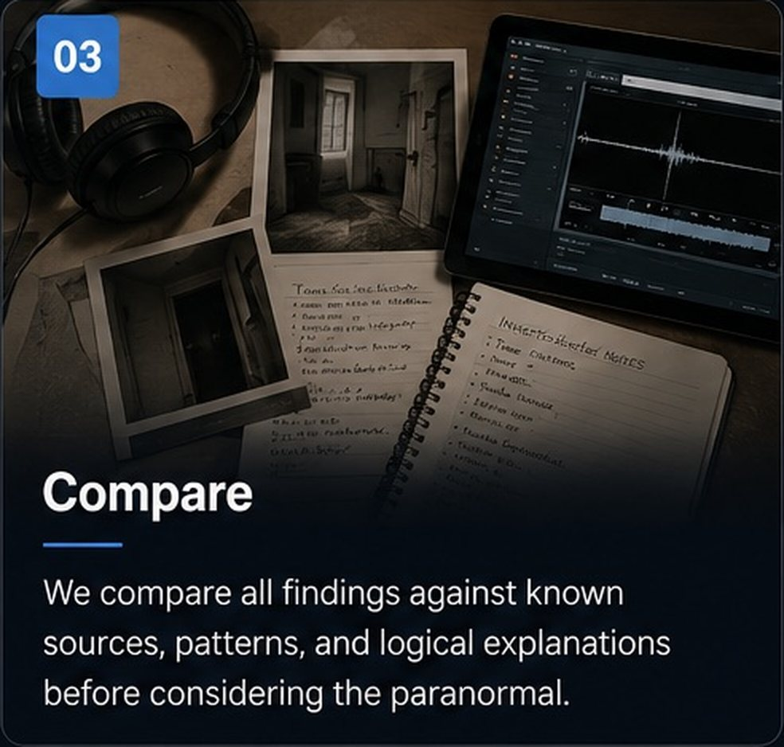
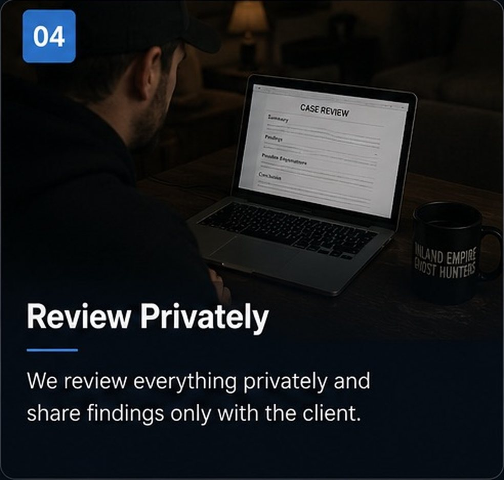
The Paranormal Observer
Recent evidence clips are available on YouTube.
Public clips from the website playlist include enhanced anomaly reviews, second camera angles, Whaley House clips, and Victorian house observations.
Winged anomaly enhanced
Enhanced review of a light anomaly captured on camera.
Open on YouTubeSecond camera angle
Additional angle used to compare movement and possible explanations.
Open on YouTubeWhaley House
K2 meter activity and orb movement from a historic location.
Open on YouTubePrivate Local Casework
Confidential by default, local by design.
Names, addresses, photos, videos, and case details are kept confidential. Evidence, location information, and private details are not published without permission.
Request a Private Consultation
Privacy Standard
Permission-based sharing only
Evidence may be reviewed privately and shared publicly only when the client or property owner approves.
Service Area
Serving the Inland Empire
Based in the Inland Empire. Serving Riverside County, San Bernardino County, and surrounding communities.
Fontana
Riverside
San Bernardino
Ontario
Rancho Cucamonga
Redlands
Hemet
Rialto
Colton
Moreno Valley
Corona
Surrounding areas
Local Inland Empire Team
Confidential Case Intake
Evidence-Based Documentation
Permission-Based Sharing